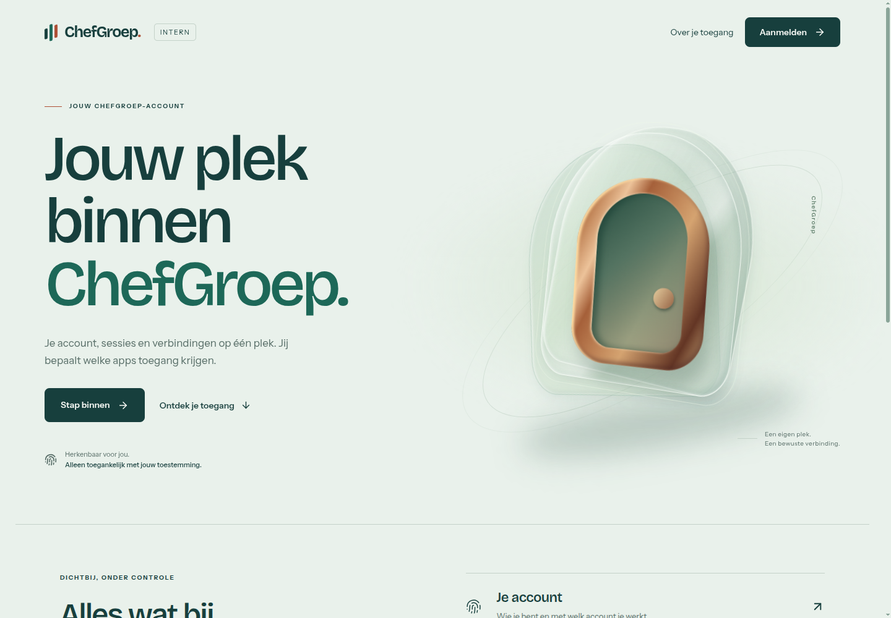

Samenvatting
ChefGroep Auth wordt de geaccepteerde referentie voor het ontwerpniveau van ChefGroep. De kwaliteit zit in de samenhang: een productgebonden ruimtelijke metafoor, doelbewuste typografie, rustige oppervlakken en volledige pagina’s voor zowel aankomst als dagelijks beheer. Een nieuw product moet die samenhang opnieuw verdienen; het krijgt niet automatisch dezelfde poort.
Joep noemt deze auth-pagina “echt top niveau” en benoemt logo, kleine details en motion als resterende verfijning. Dat is expliciete smaakacceptatie. Het is geen meetresultaat voor conversie, snelheid of toegankelijkheid. De standaard bewaart daarom zowel de sterke referentie als concrete tekortkomingen en nog onbewezen toestanden.
De design-system-repo bezit voortaan de ChefGroep-keuzes, het identity-profiel, de herbruikbare templates, dit rapport en de uitvoerbare ontwerpwerkwijze. Productrepo’s blijven eigenaar van hun frontend en gedrag. Zij nemen gecontroleerde assets of tokens over met bronverwijzing; zij hoeven de design-system-repo niet tijdens runtime te importeren.
In één oogopslag
| Onderdeel | Besluit / bewijs | Grens |
|---|---|---|
| Ontwerpniveau | Geaccepteerd door Joep in deze sessie | Geen automatische smaakscore of universeel effectbewijs |
| Identiteit | Mineraalgroen, diep petrol, schaars koper; Bricolage + Instrument Sans | Exacte poortcompositie hoort bij identity-surfaces |
| Product-UI | Landing, login, consent, account, verbindingen, sessies en beveiliging vormen één familie | Ingelogde routes hebben nog afzonderlijk browserbewijs nodig |
| Motion | Eén korte aankomst, daarna rust; reduced motion statisch | De oorspronkelijke eindeloze portal-loop is een defect, geen template-eis |
| Technische basis | 42 checks in de bewezen releaseketen; development-deploy en rollback live aangetoond | Geen bewijs voor de nog onvoltooide productiecriteria |
| Eigenaarschap | GroepOnline/design-system, met expliciete consumercontracten | Bestaande parallelle componentwijzigingen blijven buiten deze wijziging |
Opdracht en afbakening
De oorspronkelijke opdracht vroeg om twee strikt gescheiden identity-domains, één gedeelde auth-codebase, een echte MCP-connectflow en een volledig productwaardige frontend. De gebruiker wees een kale OAuth-site en generieke AI-vormgeving af. Deze producteisen geven de vorm betekenis: de gebruiker komt ergens binnen, kiest een identiteit en beslist bewust over toegang.
Dit vervolg maakt de geaccepteerde kwaliteit reproduceerbaar. Het omvat evaluatie, ontwerpregels, voorbeeldstructuren, een rapporttemplate, skills, conditionele chains, daadwerkelijke hooks en verfijning van het auth-logo en de motion. Het verandert geen accountrechten, OAuth-callbacks of toestemming namens de gebruiker.
De algemene Signaal-bibliotheek blijft generiek. Voor ChefGroep-producten is de ChefGroep-extension de standaardcontext. Het identity-spatial-profiel maakt de bijzondere vormtaal voor toegang expliciet. Een dashboard kan het kwaliteitsniveau overnemen met een andere compositie, dichtheid en productgebonden signatuur.
Bevindingen
| Onderdeel | Observatie en gevolg | Herstel / norm |
|---|---|---|
| Compositie | De grote aankomsttekst en asymmetrische poort geven de pagina een eigen leesrichting. Eén visueel object draagt de herkenning. | Behouden. Leg per product vast waarom de signatuur bij de gebruikerstaak hoort. |
| Typografie | Bricolage draagt de aankomst; Instrument Sans houdt formulieren en beheer leesbaar. De hiërarchie werkt zonder overal extra kaarten. | Behouden als identity-paar; rollen en schaal benoemen, fonts lokaal hosten met licentie. |
| Kleur en materiaal | Getint canvas en petrol verbinden koppen, knoppen en details; koper geeft de poort fysieke warmte. | Semantische statuskleuren afzonderlijk houden. Decoratieve materialiteit mag niet over controls heen liggen. |
| Logo | De eerste markering bestaat uit drie CSS-balken en heeft geen afzonderlijk herbruikbaar vectorcontract. | Een scherp SVG-asset met vaste viewBox, optische verhoudingen, afmetingen en bronhash. Geen nepstatus in het logo. |
| Motion | web/styles/app.css bevat een oneindige portal-breathe-animatie. De screenshot verhult dit probleem. | Vervangen door een eindige gelaagde aankomst; geen autoplay boven vijf seconden zonder pauze. |
| Feedback | Loading en busy gebruiken LoaderCircle met een eindeloze rotatie. Dit wijkt af van de bestaande ChefGroep-rustnorm. | Leesbare pending-tekst en een korte activiteitspuls die uitloopt naar rust; aria-busy blijft het echte request volgen. |
| Dialoogfocus | Confirm focust Annuleren, maar legt het teruggeven van focus niet expliciet vast in zijn cleanup. | Trigger onthouden, dialoog sluiten en alleen een nog bestaand element terugfocussen. |
| Decoratieve iconen | Niet iedere Lucide-render is expliciet verborgen voor assistieve technologie. | Decoratieve iconen verbergen; de knop of link houdt een zichtbare tekst of toegankelijke naam. |
| Standaartrouter | De geïnstalleerde design-system-skill verwijst naar de verdwenen map ~/design-system en noemt gegenereerde pagina’s handwerk. | Canonieke repo en generator-eigenaarschap corrigeren; adapters worden uit repo-bron afgeleid. |
| Bewijsdekking | Desktop en telefoonlanding zijn bekeken. Een volledige ingelogde routecontrole is nog niet vastgelegd. | Onbewezen staten benoemen en testen voordat ze als geverifieerd template gelden. |
Context en voorwaarden
Een identity-interface kan vertrouwen niet uit vormgeving afleiden. De server bepaalt account, lidmaatschap, toestemming, scopes, sessies en intrekking. De frontend mag geen interne rechten uit een e-mailadres of publiek account construeren. Een succesmelding volgt pas na een bevestigde servermutatie.
Deze sessie bevat afzonderlijk protocolbewijs voor gewone ChatGPT Chat en afzonderlijk bewijs voor deployment. Work-ondersteuning en de samengestelde distributie met echte Kater/Brain/ChefShare-contracten zijn nog niet bewezen. De vormgeving mag die gaten niet vullen met groene badges of verzonnen verbonden apps.
De bron van de template is een werkende codebase in ontwikkeling, geen voltooide productiecertificering. De sterke landing mag als smaakreferentie dienen terwijl onbewezen ingelogde toestanden nog een expliciete verificatieverplichting hebben.
- De goedgekeurde richting heeft voor ChefGroep Auth voorrang op oudere serif/dot-matrix/blue-only-authvoorkeuren.
- Een losse visuele smaakregel mag nooit een server- of toegankelijkheidscontract overschrijven.
- Een rapport is volledig door dekking en onderbouwing, niet door een verplichte lengte of aantal plaatjes.
- De teamruntime faalde tijdens deze vervolgtaak vóór het leveren van werk. De controles zijn door de primaire agent overgenomen; er wordt geen onafhankelijke review geclaimd.
Wat de referentie reproduceerbaar maakt
De zichtbare werkvolgorde levert een bruikbaar procespatroon: product- en protocolfeiten verzamelen, één visuele these kiezen, DESIGN.md en UX-CONTRACT.md vastleggen, een representatieve route bouwen, werkelijk renderen en daarna uitbreiden. Dat is een ontwerpwerkwijze, geen bewezen causaliteit tussen één model en een mooi resultaat.
De poort maakt binnenkomen, scheiding en toestemming tastbaar. Haar transparante vlakken zijn decoratieve illustratie. De controles zelf blijven mat, leesbaar en stil. Daardoor hoeft niet elk component een apart effect te krijgen.
Na binnenkomst verandert het register. Account, sessies, security en connections gebruiken dezelfde familie maar geven data en handelingen meer ruimte. Een topniveau-product bestaat ook uit heldere lege staten, correcte errors en herstelroutes. “Alles als component” betekent gedeeld eigenaarschap voor herhaald gedrag, niet een wrapper om elke tekstregel.
| Laag | Herbruikbaar contract | Niet blind kopiëren |
|---|---|---|
| Aankomst | Sterke typografische these, één signatuur, direct herkenbare hoofdactie | Letterlijke poort op een niet-identity-product |
| Beslissing | Client + dienst + account + scopes + weigeren + toestaan | Decoratieve lock-iconen als bewijs van veiligheid |
| Beheer | Rustige paginaheaders, consistente controls, echte states | Cinematische illustraties achter iedere tabel |
| Bewijs | Bronversie, screenshot, interactiecontrole en beperkte claims | Modelnaam, screenshot of groene build als totale kwaliteitsgarantie |
Gevolgen voor de ontwerpstandaard
| Gebied | Standaard vanaf nu | Eigenaarschap |
|---|---|---|
| ChefGroep-default | De ChefGroep-extension is de eerste keuze voor ChefGroep-productwerk; een passende surface/profile specificeert de vorm. | extensions/chefgroep + profiles + surfaces |
| Tokenpad | Mineraal/petrol/koper en twee fontrollen zijn exact vastgelegd voor identity. Een consumenten-kopie krijgt een bronhash. | templates/identity-spatial; runtime blijft in productrepo |
| Componenten | Button, ActionLink, Field, Notice, Loading, Empty, Failure, Confirm, PageTitle, Portal, Brand en navigatie krijgen expliciete states. | Productprimitives; generieke promotie via catalogusregels |
| Hooks | Context-hook adviseert; structurele kwaliteitscheck blokkeert aantoonbare regressies via bestaande quality/pre-push/CI-route. | Repo-eigen uitvoerbare scripts; geen verzonnen Codex-hookondersteuning |
| Skills | Dunne router → gedeelde procedure → gerichte uitvoering/audit/rapportage. Geen bulk-preload van alle designplugins. | .agents/skills + .agents/meta |
| Rapporten | De volledige Design Report-secties blijven behouden; bron, oordeel, fix en onzekerheid zijn apart leesbaar. | templates/design-report + reports |
| Vendorreferenties | Het oorspronkelijke DOCX en preview blijven byte-identiek bewaard. ChefGroep HTML is een expliciet aangepaste variant. | templates/design-report/external + provenance.json |
Uitvoering en acceptatie
De eerste herstelronde richt zich op het SVG-logo, eindige portal-motion, rustige pending-feedback, decoratieve iconen en expliciete focusherstelcode. Deze wijzigingen moeten zowel in de auth-code als in de herbruikbare referentie terug te vinden zijn. Backendcontracten blijven de gedragsbron.
Voor iedere volgende route wordt een compacte run voorbereid met gebruikersdoel, echte toestanden, hoofdactie, gekozen profiel, token-eigenaar en relevante voorbeeldpagina. De chain accepteert pas een vervolgstap nadat zijn afhankelijkheden bewijs hebben. Het bijbehorende script voorkomt dat een latere fase stil wordt afgevinkt terwijl een eerdere fase ontbreekt.
Voor vrijgave zijn desktop, kleine telefoon, reduced motion, toetsenbordfocus en toepasselijke error/empty/pending/success/herstelstaten nodig. Een echt ingelogde flow vereist een echt account en de menselijke toestemming waar die hoort. Testfixtures mogen de layout zichtbaar maken, maar worden als fixtures gelabeld en bewijzen geen live autorisatie.
| Route | Vereiste staten | Bewijsstatus bij start van deze evaluatie |
|---|---|---|
| Landing en login | Anoniem, identity onbeschikbaar, narrow viewport, reduced motion | Landing desktop/phone gezien; loginbron en contract gelezen |
| Connect/consent | Login nodig, accountkeuze, scopes, deny, allow, verlopen, gebruikt, fout | Bron aanwezig; volledige ingelogde productcontrole nog open |
| Account | Profiel, save pending, validatiefout, opgeslagen, netwerkfout | Bron aanwezig; echte sessiecontrole nog open |
| Connections en details | Leeg, actief, verlopen, ingetrokken, revoke pending/fout | Verloop en denial via tests; UI met echt account nog open |
| Sessies | Huidig apparaat, andere sessie, revoke huidige/andere, fout | Serverregressies aanwezig; interactierender nog open |
| Security | Echte methoden, upstreambeheer, audit, lege/foutstaat | Auditbron aanwezig; methoden nog upstream beheerd |
Vastgesteld besluit
ChefGroep neemt het kwaliteitsniveau en de ontwerpwerkwijze van deze auth-richting over als standaard. De identity-uitwerking zelf blijft een gericht profiel. Nieuwe producten krijgen dezelfde zorg voor typografie, compositie, complete states, motion en bewijs, met een eigen inhoudelijke reden voor hun signatuur.
Deze standaard mag niet terugvallen op “maak het premium” zonder concrete keuzes. Zij mag evenmin smaakacceptatie gebruiken om ontbrekende productfunctionaliteit goed te praten. De referentie, de uitvoerbare controles en het volledige rapport blijven samen onderhouden.
Specificaties en overdracht
| Specificatie | Waarde / regel |
|---|---|
| Canvas / paper | #EAF1EC / #F8FAF6 |
| Ink / muted | #103D3B / #566D67 |
| Brand / copper / line | #176857 / #AE4E32 / #C5D3CA |
| Display / body | Bricolage Grotesque Variable / Instrument Sans Variable |
| Logo | 36 × 36 viewBox, drie optisch afgestemde vlakken, decoratief in gelabelde home-link |
| Motion | Transform en opacity; aankomst maximaal 1,2 s; laagvertragingen korter dan totale aankomst; geen verplichte wachttijd |
| Reduced motion | Statische eindcompositie, geen loop, geen springende controls |
| Controls | 44 px aanraakdoel, zichtbare focus, stabiele maat tijdens pending, betekenisvolle naam |
| Datum en taal | Nederlandse UI; Intl met nl-NL en Europe/Amsterdam |
| Rapportbron | report.json; render-design-report.py; structureel complete HTML met printstijl |
| Bewijsscheiding | Taste judgment, statische check, visueel renderbewijs en werkelijk runtimegedrag zijn afzonderlijke conclusies |
Notities en beperkingen
De historische mapnaam auth-astra-2026-09-11 is behouden om bestaande referenties te laten werken. Die naam is geen voorschrift voor een model, provider of reasoningstand. Er is geen gecontroleerde vergelijking die bewijst dat een specifiek model deze kwaliteit veroorzaakt.
De meegeleverde vendor-template bevat een DOCX met eigen paginastijl en placeholders. De documentplugin voor een native gerenderde DOCX-bewerking is in deze uitvoering niet beschikbaar. De originele referentie wordt behouden; het repo-eigen HTML-rapport gebruikt dezelfde volledige inhoudsstructuur met de expliciet gevraagde ChefGroep-stijl. Er wordt geen pixel-identieke DOCX-export geclaimd.
Nieuwe ontwerpregels veranderen geen geïnstalleerde modelconfiguratie, sessies of geheugeninstellingen. Geïnstalleerde skill-adapters zijn afgeleiden van de repo-bron; een adapterinstallatie bewaart de vorige bestanden en rapporteert hashes.
Performance, conversie, dark-mode-dekking en volledige schermlezercontrole worden alleen geclaimd na passende metingen. De goedgekeurde identity-baseline is licht. Een later donker thema vereist een eigen semantische palette en verificatie; automatisch inverteren is onvoldoende.
Bronnen
Automatische development-deployment, geslaagd
Bewuste rollbackproef, terecht rode workflow na herstel
Actuele Web Interface Guidelines
{kind=link}
{kind=link}